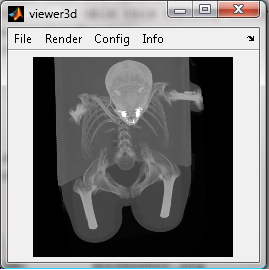
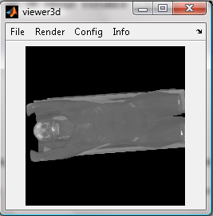
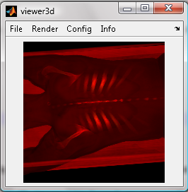
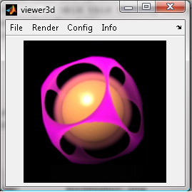
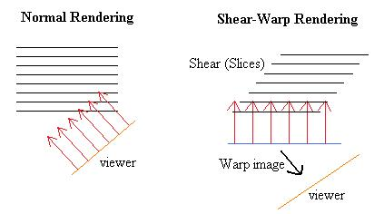
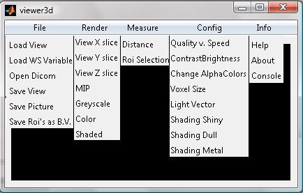
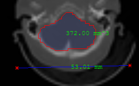
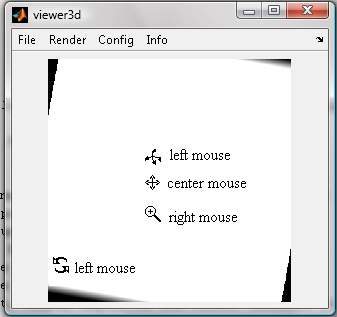
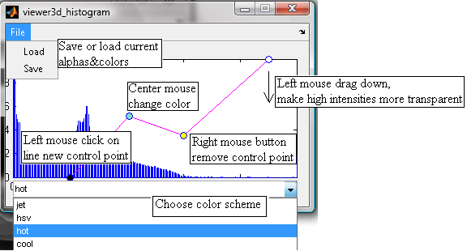

Viewer3D Help
Index
Viewer3D (Intro)
This viewer can be used to interactively view any kind of 3D image volumes like CT and MRI.
It includes:
Maximum intensity projections (MIP)

|
Volume Rendering (VR)

|
Colored Volume Rendering

|
Phong shaded Volume rendering.

|
Voxel opacity and color tables can be changed on the fly allowing also iso surface kind of renders.
Shear-Warp
The fast render algorithm which used is based on a c-code implementation of the Shear-Warp transform.
Instead of rotating the viewer rays the volume slices are sheared, and the rays go parallel through
the volume allowing 2D interpolation instead of 3D, and efficient caching of data

The intermediate image after rendering through the sheared slices must be warped to
get the correct final image.
Starting Viewer3D
Viewer3D can be called from the command window with the following inputs:
VIEWER3D(V, RENDERTYPE, SCALES);
inputs,
V : 3D Input image volume, of type double, single, uint8, uint16, uint32,
int8, int16 or int32
(the render process uses only double calculations)
RENDERTYPE: 'MIP' Maximum Intensity Render (default)
'VR' Volume Rendering
'VRC' Volume Rendering Color
'VRS' Volume Rendering with Shading
'SLICES' Render volume slice
SCALES: The sizes(height, width, depth) of one voxel. (default [1 1 1])
When Viewer3D is called without inputs you can load a previous saved view.
The Matlab render functions are also available as MEX / c-code in mex_c-code.zip

File
- Load View : Load a previous saved render
- Load WS Variable: Load a 3D volume from a Matlab Workspace variable
- Open Dicom: Load a folder which contains multiple dicom files,
describing the slices of one volume
- Save View : Save render data to a matlab file
- Save Picture : Save a "Screenshot" to an image file (.png or .jpg)
- Save Roi's as B.V. : Save the select roi's in the slice views as binary volume,
with all voxels one which are part of a roi.
Render
- View X slice: View x-plane slice of volume
-
- View Y slice: View y-plane slice of volume
-
- View Z slice: View z-plane slice of volume
-
- MIP : Maximum intensity projection rendering
- Greyscale : Greyscale volume rendering
- Color : Colored volume rendering
- Shaded : Phong shaded volume rendering
Measure

- Measure Distance: Measure a distance between two points in slice mode. Click once
with the left mouse button to select one point, and a second time to measure the distance between those points -
- Measure Roi: Measure the volume in a region, select points with the left mouse button, double click to finish
the roi selection.
Right click on the edge of a roi, or distance line to remove it.
Config
- Quality v. Speed : Menu in which you can adjust the tradeoff of between Quality, Memory and Speed
- ContrastBrightness: Change contrast and brightness of render
- Change AlphaColor : Will display the AlphaColor Window, used to change opacity and color of voxels
- Voxel Size : Adjust the scaling of a voxel in x,y and z
- Light Vector : Adjust the direction of the light used in volume shading
- Shading Shiny, change Phong shading to make object look shiny
- Shading Dull, change Phong shading to make object look dull
- Shading Metal, change Phong shading to make object look metal
Info
- Help : Display this help document
- About : Display version an author information
Main Render Window

- Zoom: Right mouse button
- Remove measurement: Right mouse button on edge of measurement
- Pan : Center mouse button
- Change Slice: Scroll button, or arrow keys
- Rotate around Z: Left mouse button at boundary of renderimage
- Rotate around XY: Left mouse button in center of renderimage
Change Alphacolors Window

The graph is showing the histogram of the data, with on the x-axis the intensity values.
The curve shown is a mapping from intensity to alpha and color, with on the y-axis
the opacity of the voxel form zero (transparent) to one (solid)
- drag a point with the left mouse button in y direction down to make a voxel of a certain intensity more transparent.
- click with the left mouse button on the line between the poinst to create a new (control) point
- click on a control point with the right mouse button to remove it.
- click on a control point with the center mouse button to change its color